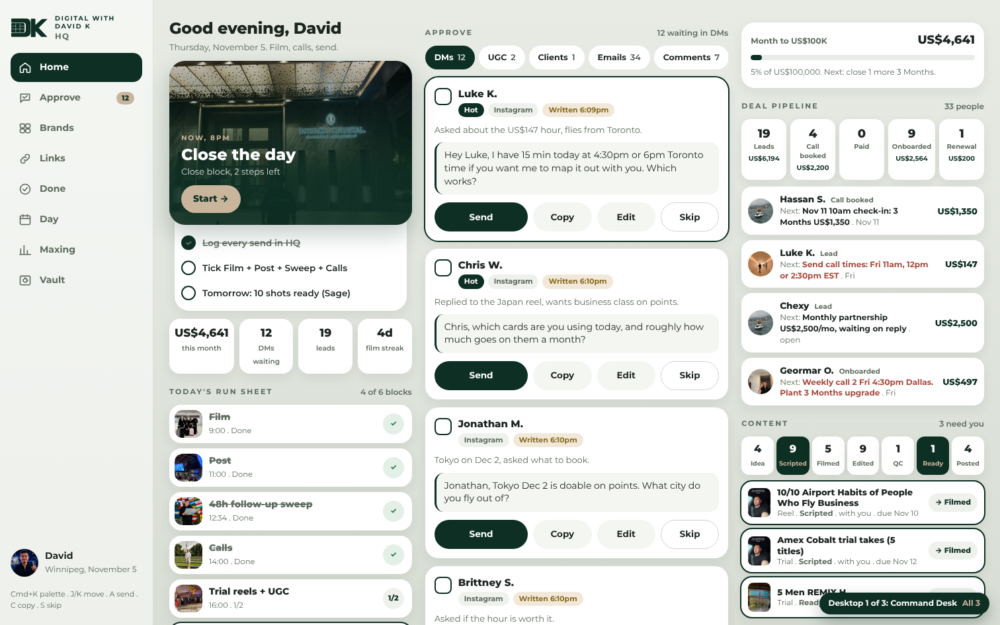
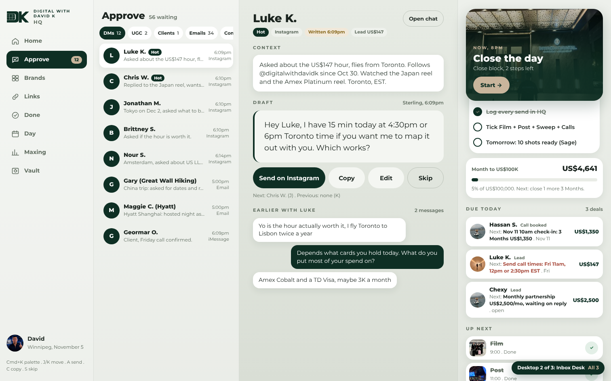
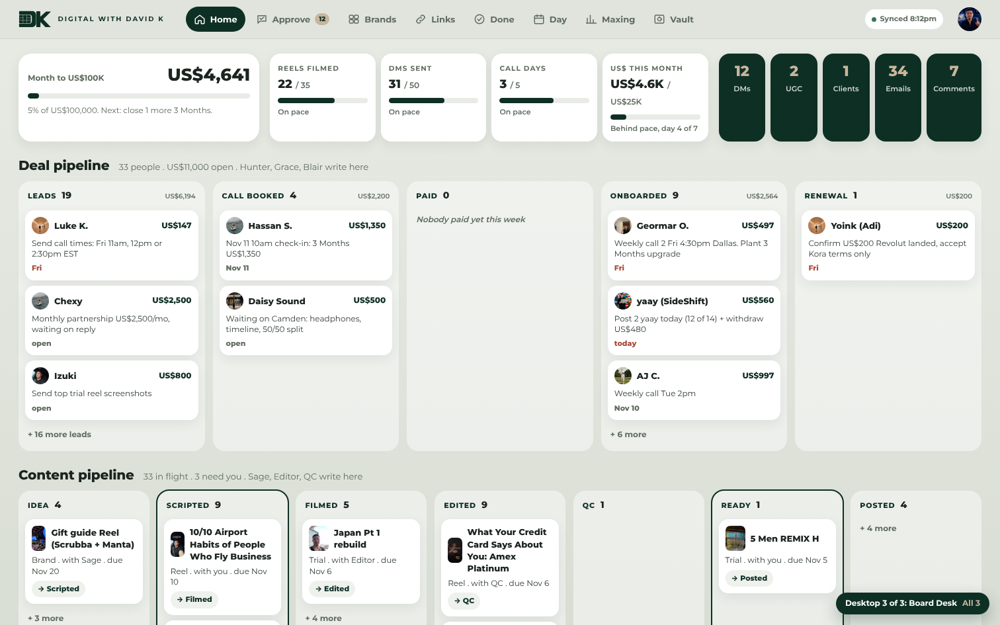

HQ on desktop, 3 ways
Phone layout stays exactly as it is. These are Mac and monitor layouts only, sample data in the real HQ shape. Open one, then pick a number.

1. Command DeskThree columns: your day, the inbox, the numbersLeft rail for the 8 tabs. Column one is the phone Today screen (Now card, steps, run sheet, Film Mode) so nothing you learned changes. Column two is the Approve inbox, live on the home screen with Send, Copy, Edit, Skip, so you answer DMs without leaving Home. Column three is every number: money bar, deal stages, content flow, week scoreboard, waiting counts. One screen, no tabs, for a big monitor.Open Command Desk 
2. Inbox DeskMail style: list on the left, the draft big in the middle, your day on the rightBuilt around answering. The left pane lists every waiting message like Superhuman: name, channel, hot badge, time. The middle shows the selected draft large with context above it, Send, Copy, Edit, Skip below, and J/K to move. The right rail keeps the Now card, up next, money bar, deals due today and the week. Fastest for a 20-DM session on the Mac, and Copy sits right under the draft for iMessage leads.Open Inbox Desk 
3. Board DeskOne wide board: pipelines as columns, the day as a timeline, every number on topTop bar instead of a rail so the board gets the full width. A KPI strip runs across the top: money bar, four week targets, five waiting counts. Under it the Deal pipeline and Content pipeline as real Kanban columns, each card with the next step and due date, which is where the four desks write. The day runs along the bottom as a horizontal timeline with the Now card, and Film Mode and the Idea box sit next to it. The most information per screen, built for a 27 inch monitor.Open Board Desk